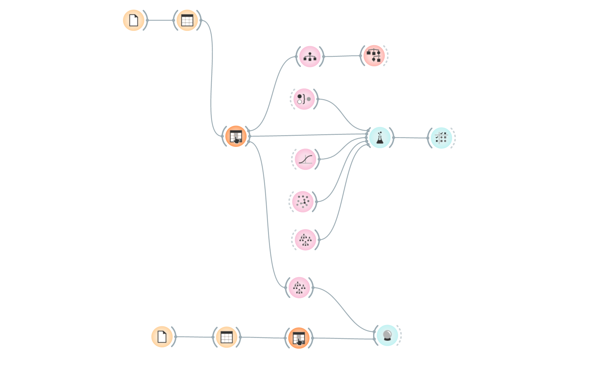
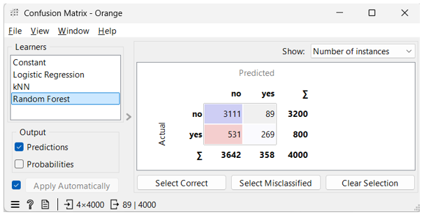

Applying Classification Models to a Real-World Marketing Problem
Machine learning project using Orange, built during MSc Business Analytics at the University of Nottingham
Project Overview
This was my first proper introduction to machine learning, and it came with a twist I didn't expect: most of it was done without writing a single line of code. The tool we used was Orange, a visual node-based data analysis platform that makes building and comparing ML models surprisingly intuitive.
Going in, I expected this to be pretty intimidating as I had never dealt with machine learning before. Coming out, I was genuinely surprised by how accessible it made the whole process and honestly how much fun I had with it. If you've ever been put off by machine learning because of the code side of things, Orange is worth looking at.
The brief was straightforward: given a dataset from a bank's previous marketing campaign, build a model that could predict which customers were most likely to subscribe to a new financial product, while minimising wasted calls to people who wouldn't convert.
Tools I Used
Orange was used for everything: data exploration, model building, evaluation and comparison. The node-based interface meant I could focus on the analytical thinking rather than getting stuck on syntax. You connect nodes together to build a workflow and can see results update in real time as you tweak things. It genuinely made the whole process feel like play at times.
The Orange Workflow

This workflow tells the whole story of the modelling process. Data comes in on the left, gets preprocessed, feeds into three different models, and the results get compared on the right. No code, just nodes.
The Process
Before touching any models, I spent time actually understanding the dataset. With 4,000 records and 17 features, there was a lot to unpack. Some early findings were genuinely surprising.
Students had nearly a 1 in 2 success rate for subscribing to the product. That was not something I expected going in. People with active housing loans were noticeably less likely to convert. And whether someone had subscribed in a previous campaign turned out to be the single strongest predictor of future behaviour by quite a margin: around 80% of previous subscribers converted again for the new product.
From there I built a decision tree to explore which features were actually driving outcomes before moving into the model comparison stage. I compared three classification models: Logistic Regression, k-Nearest Neighbours (kNN) and Random Forest. Each one was tested and adjusted across multiple experiments to find the most optimal version.
The Most Interesting Finding
This is where it got genuinely interesting. At first glance, Logistic Regression looked like the better model. It had fewer false positives, meaning fewer wasted calls to people who wouldn't convert. On paper, that seems like the right answer given the brief.
But when I looked at the confusion matrix properly, the picture changed. The Random Forest model identified over 100 more customers who would have actually converted. The Logistic Regression model was missing them entirely. When you think about what that means in a real business context, the revenue from those extra conversions far outweighs the cost of a few extra calls.
That was the key lesson: performance metrics only tell part of the story. The business context is just as important as the numbers themselves.
Model Comparison: Confusion Matrix

The difference in true positives between Random Forest (271) and Logistic Regression (157) was the deciding factor. More than 100 extra correctly identified customers is a significant business impact, especially when the cost of a wasted call is relatively low.
Other Key Findings
- Previous campaign outcome was by far the strongest predictor. 80% of customers who subscribed to a previous product said yes to the new one too.
- Students and retired people were the highest converting job categories. Students especially, at nearly 1 in 2, which surprised everyone I imagine.
- Housing loans had a clear negative effect. Customers with active loans were significantly less likely to subscribe, suggesting financial pressure plays a role.
- Spacing campaigns roughly two months apart showed better results than contacting people too frequently. There is a sweet spot worth paying attention to.
- Call duration had a strong correlation with success but could not be used as a predictive feature since you only know how long a call was after it has ended.
Lessons I Learned
The obvious one is getting comfortable with Orange, which happened pretty quickly. The node-based approach rewards curiosity and you can iterate fast without worrying about breaking anything.
The more important lesson was learning how to think about model selection from a business angle rather than just chasing the best accuracy score. Precision, recall and the confusion matrix all mean something different depending on what the business actually cares about. In this case, missing a potential customer was worse than making a few extra calls.
I also got a lot out of the data exploration phase before any models were built. Spending time with the data first meant I understood why the models were making the decisions they were, rather than just accepting the output blindly.
What Would Have Made This Project Better
- A real cost-benefit figure for wasted calls versus converted customers would have made the final recommendation much more concrete. I assumed conversion revenue outweighs call cost, which seems reasonable, but actual numbers would have nailed it.
- More data on successful customers would likely have reduced the false negative rate on the Random Forest model. The dataset was heavily imbalanced with only 20% successful outcomes.
- Tracking campaign outcomes properly was flagged as a major gap. Around 80% of previous campaign outcomes in the dataset were listed as unknown, which limited how much that feature could actually help the model.
Final Thoughts
This was one of those projects where the tool genuinely shaped how I thought about the problem. Orange removed the barrier of code and let me focus on the analysis itself, which for a first ML project was exactly what I needed. The fact that it was still rigorous enough to produce meaningful, comparable results made it even better.
I came out of it wanting to go deeper into both the models themselves and how you translate their outputs into real decisions. Which I suppose is the best outcome for any project like this.
If you want to discuss the full findings or methodology, feel free to reach out on LinkedIn below. Happy to chat!